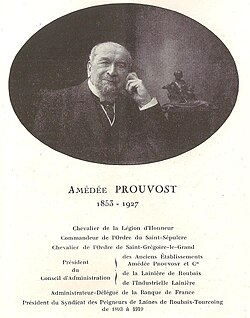

Amédée Charles PROUVOST — Né le 13/04/1853 à Roubaix — Décédé le 09/01/1927 à Roubaix
Amédée Charles PROUVOST
Né le 13/04/1853 à Roubaix
Décédé le 09/01/1927 à Roubaix
Résumé
Amédée Charles Prouvost (dit Amédée II) naît le 13 avril 1853 à Roubaix, fils d'Amédée Prouvost (1820–1885), fondateur du Peignage Amédée Prouvost, et petit-fils d'Henri Prouvost, maire adjoint de Roubaix. Il hérite ainsi d'une double tradition familiale — industrielle et civique — et consacre sa vie entière au développement de l'entreprise lainière fondée par son père.
Réformé du service militaire pour cause de blessure, il prend la direction du peignage et l'étend considérablement. Pendant quarante-cinq ans, il développe à l'étranger le renom de l'industrie lainière de Roubaix-Tourcoing et donne une extension notable à l'exportation des laines peignées françaises, allant jusqu'à créer une importante filature de laine peignée à Neugedein, en Bohême (territoire austro-hongrois devenu tchécoslovaque en 1918). Il assume la présidence du conseil d'administration de la Société anonyme du Peignage à Roubaix, de la Lainière de Roubaix — fondée en 1911 par son neveu Jean Prouvost, qui deviendra la plus grande filature d'Europe — et de la filature de Neugedein. Il est également vice-président de la Société industrielle de Roubaix de 1899 à 1920, président du Syndicat des peigneurs de Roubaix-Tourcoing de 1899 à 1920, administrateur de la Banque de France et membre du comité consultatif de l'Exposition internationale du Nord de la France.
Lorsque la guerre éclate en 1914, il est déporté comme otage et emprisonné six mois par les Allemands. Resté seul administrateur du peignage pendant toute la durée de l'occupation, il s'emploie à protéger ses ouvriers et parvient à empêcher l'enlèvement de nombreuses femmes et jeunes filles menacées par l'occupant. À l'été 1917, il obtient même d'un négociant allemand établi à Roubaix avant-guerre la formation d'un mouvement de filateurs allemands opposés à la destruction des peignages de Roubaix-Tourcoing, manœuvre qui en aurait retardé l'exécution de plusieurs semaines. Il reçoit pour cela la médaille des victimes de l'invasion. Dès l'armistice, il s'attelle à la remise en état de ses établissements gravement endommagés.
Il est nommé chevalier de la Légion d'honneur le 5 novembre 1923. Commandeur de l'ordre du Saint-Sépulcre et chevalier de l'ordre de Saint-Grégoire-le-Grand, il incarne la figure du grand industriel catholique du Nord, alliant engagement économique et responsabilité sociale. Il décède le 9 janvier 1927 à Roubaix.
Sa sœur Joséphine Prouvost ayant épousé Charles Henri Droulers, Amédée Charles est le grand-oncle d'Agnès Wattinne : il se rattache à notre famille par cette branche collatérale, la lignée directe passant par sa sœur Joséphine et leur père Amédée I.
Sources :
